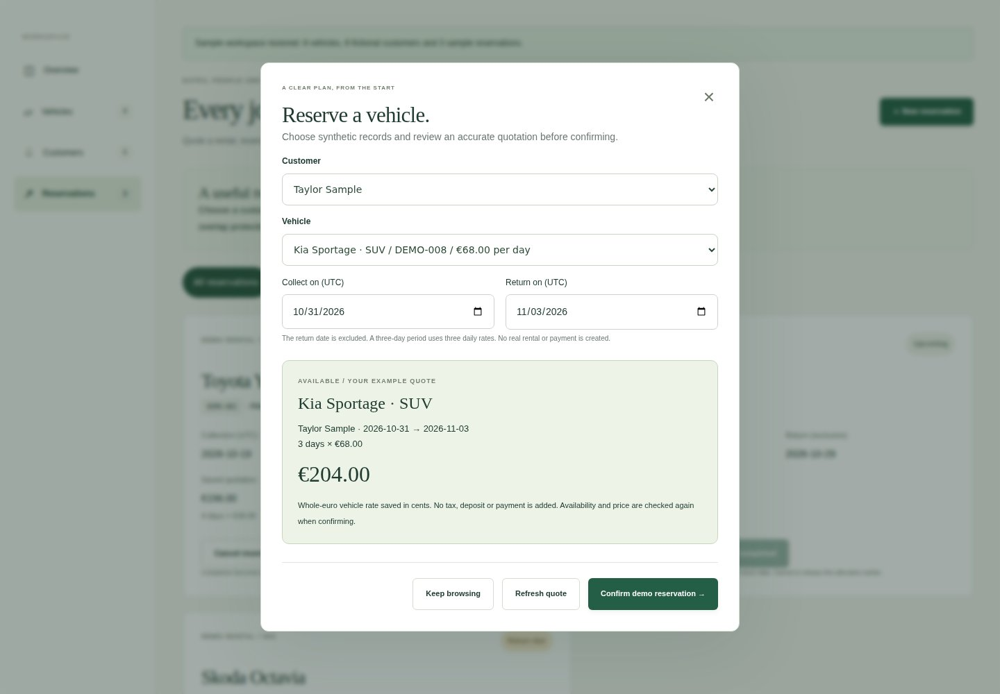
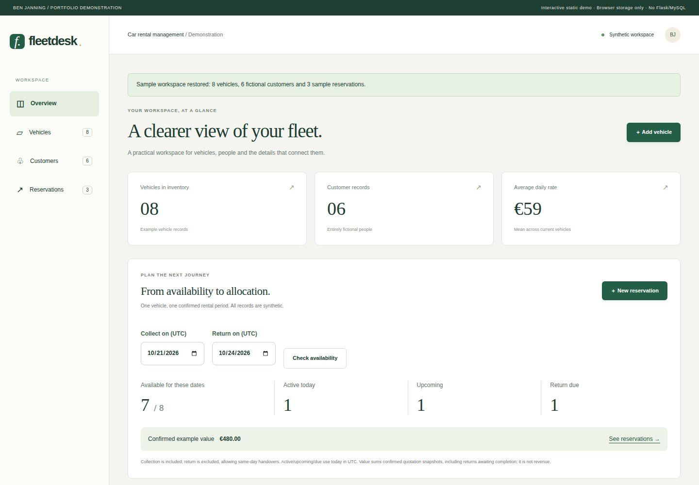
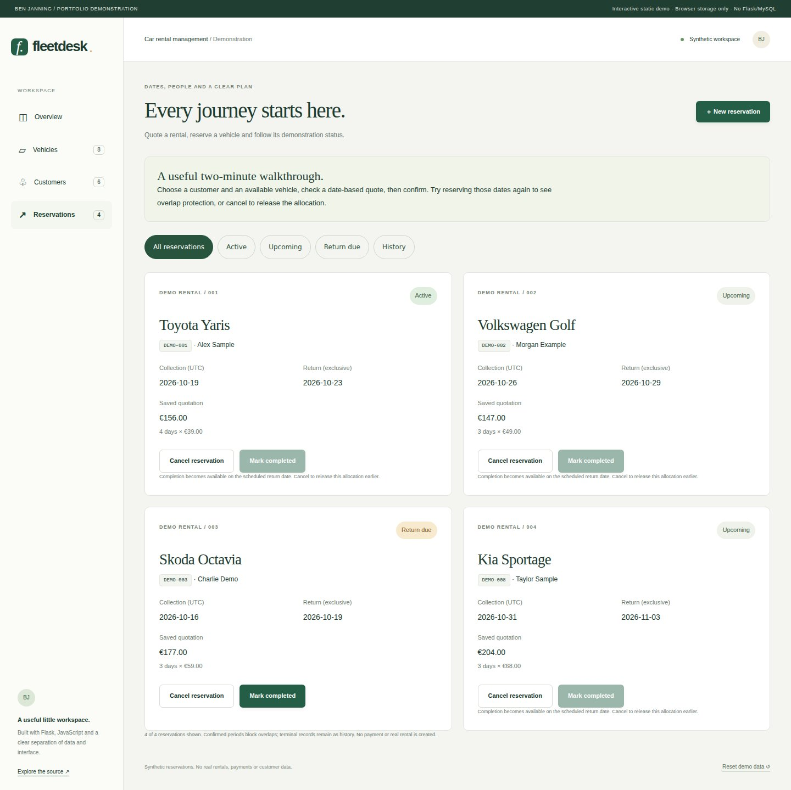
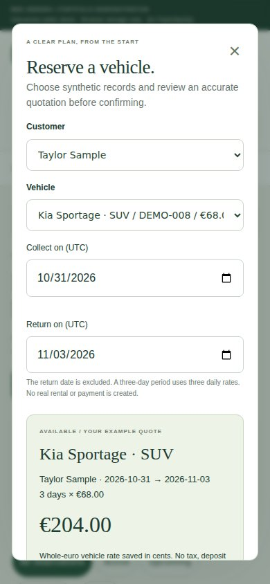
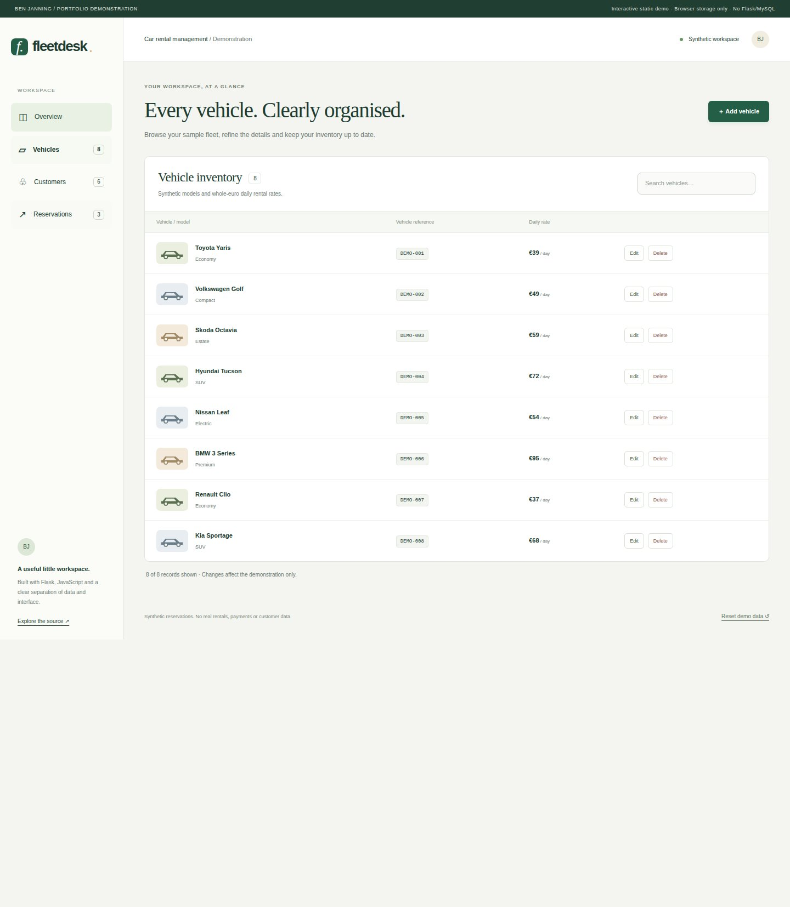

Fleetdesk rental management.
Quote a rental, allocate an available vehicle and manage demonstration reservations with tested date, pricing and concurrency rules.
Public demo: browser-managed synthetic data. The Flask/MySQL implementation is available separately in the source.

What I built
Extended the original vehicle/customer application with genuine synthetic reservations, advisory availability, quotation snapshots, cancellation and completion while preserving its existing REST contracts.
Why it matters
A rental workspace must prevent two customers from being promised the same vehicle for overlapping dates, and keep the reviewed price clear when records change.
How it works
- 01
Choose an existing customer, a vehicle and a UTC collection/return period, then review the calculated quote.
- 02
Confirm an allocation with overlap and current-rate checks; retry safely if a response is lost.
- 03
Track active, upcoming and return-due reservations, cancel allocations or complete due rentals, and inspect calculated availability.
The technical challenge
Availability can change between viewing a quote and confirming it. The solution rechecks at the write boundary: a process lock, a browser Web Lock or a MySQL transaction serializes competing allocations. A concurrent test must produce one successful reservation and one conflict, while an identical retry returns the original record.
What it demonstrates
Full-stack development, REST endpoints, relational data access and translating a record-management requirement into a usable interface.
Evidence, with context.
Existing record workflows and new rental workflows pass API/domain, browser-rule and full browser checks before this release. The isolated MySQL integration verifies simultaneous overlap rejection, retry identity, saved prices, referential integrity and state transitions. Desktop/mobile captures match this exact source revision; the linked run records its actual result.
Verified source: f4503ed54d02 · Tests and visual capture ↗








Scope and limitations
Synthetic educational application, with no real fleet, payments, tax/deposit calculation or deployed multi-user backend. The public demo is local to one browser profile and uses Web Locks to coordinate its tabs; it cannot allocate across devices. UTC dates use an exclusive return date. Early-return pricing, rental amendments and deletion of referenced history are outside scope. MySQL allocation safety assumes writes use the transactional service.
Visual provenance and source attribution are recorded in the evidence register ↗.
Under the surface.
Architecture, methods and improvements
Separate pure rental rules, memory/MySQL adapters and a presentation module preserve original CRUD routes. Python and JavaScript follow a 27-case rules contract. Memory uses a shared RLock; browser writes use an exclusive Web Lock and fresh storage read; MySQL confirmation locks the vehicle/customer rows in a transaction and preserves references with foreign keys. Request IDs prevent duplicate creation after a lost response. Integer-cent rate and name snapshots preserve quoted terms; stale rates require a new quote.
Try it locally
Install requirements.txt; set DEMO_MODE=1 and run python CarServer.py. The README documents the non-destructive MySQL reservation migration and opt-in isolated integration checks. The public static demo shares its frontend and tested rules contract.
The portfolio is a static GitHub Pages site. Server applications run locally; the portfolio does not collect bookings, credentials or payments.